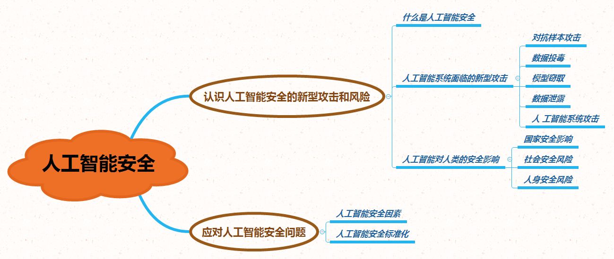

项目一 探究人工智能安全问题
项目情景
在2020世界机器人大会上，全球最炫酷的机器人产品、最前沿的人工智能技术闪亮登场。人工智能已成为当代全球最火爆的高科技领域。人工智能正在成为以新一轮科技革命为基础的国家竞争制高点。欧盟的“人脑计划”、日本的“人工智能/大数据/物联网/网络安全综合项目”以及美国的《国家人工智能研究与发展战略规划》，都将人工智能全面提升到国家战略层面。与此同时，“黑客”攻击电网导致大范围停电，政府内网被植入“后门”，机密情报被窃取、重要网站被劫持、个人信息集中泄露，家中摄像头被远程操控肆意窥探……这些曾经只出现在科幻小说里的安全问题，如今却在全球不时上演。人工智能的发展速度远远超越了人类自身的进化速度，这也引起了诸多学者的警惕。人类的职业是否会被机器代替？机器会不会反过来操控人类，控制人类居住的星球，并最终将人类淘汰出局？
项目导览

项目目标
- 能够感受人工智能安全对国家对社会对个人的影响
- 了解针对人工智能系统的威胁攻击方式
- 了解针人工智能系统的安全防范措施
项目规划
特斯拉创始人埃隆·马斯克认为，人工智能将威胁人类，或引发恐慌，呼吁政府尽快考虑针对这一技术的相关立法与管控，著名物理学家霍金也发出对人工智能的警告：“人工智能可能毁灭人类”；而Facebook的创办人扎克伯格等人则认为，人工智能将会让人类的生活变得更安全和美好。通过阅读材料、搜素网络资源、查找书籍，了解人工智能的安全。
| 探索任务 | 主要内容 | 典型案例 |
|---|---|---|
| 人工智能面临的新型攻击威胁 | ||
| 人工智能给人类带来的安全隐患和影响 | ||
| 如何防范人工智能安全问题 |
活动探究
- 人工智能安全问题及其产生的原因是什么？
- 如何看待人工智能技术的“甲之砒霜，乙之蜜糖”之说？